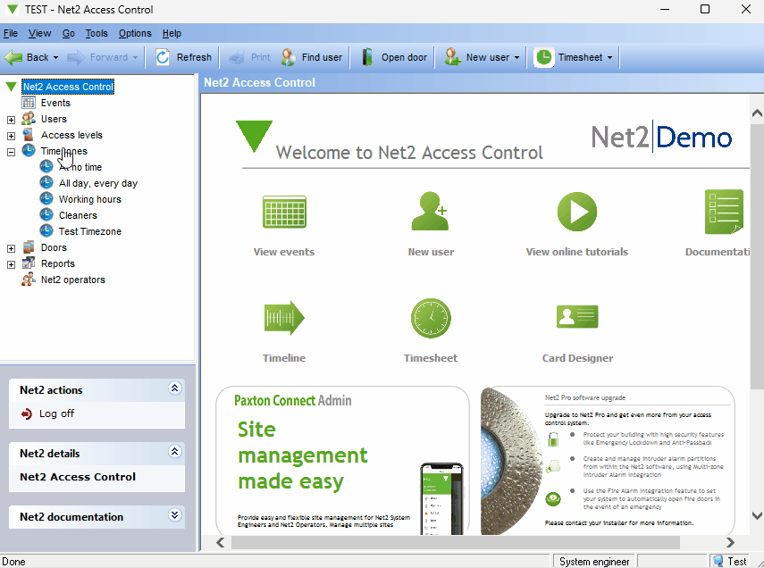

Admin
User Management
Adding
Users are added by navigating to the user tab and clicking on new user, either in the list view displayed on the right, or in the toolbar displayed at the top.
User information can be added in the Add user pop-up, this information varies from personal identifying information, to information like the pin which is used to open gates.
FOR KEYPAD ACCESS a pin MUST be assigned to the user. When a user opens the gate using their pin, it will log that access in the system.
Deleting
To delete a user, select the user as if you were going to edit them, then click the Void user button at the bottom of the application. Voiding the user means to bar them from all doors, giving them the no access Access Level Permissions. Once a user has been voided, they can then be deleted by pressing the Delete record button.
Editing
A user can be edited by double clicking on that user in either the list view on the left, or the list view on the right once the Users tab has been clicked. You can change personal identifying now, AND assign Access level permissions. Access level permissions dictate what doors the user can open at what time.
Operators (Application Permissions)
Operators are Net2's way of handling permissions. Basic user editing and management involves handing adding tokens to the user so that they can open a door with those tokens. Operators can log in to the software themselves. Everything an operator does in the software will be logged, including signing in. Below is a table which details the operators permission levels and what they are capable of doing.
An operator can be:
Added
Operators are added by clicking on the Net2 operators tab and clicking either New operator in the list view, or the New operator option in the tool bar. A user, operator permission, and password is then chosen. Before an operator role can be created for someone, they must have a user created for them. Adding a user is described in User Management
Edited
Operators are edited by clicking on the operator in question and clicking edit. Changing the operator to any of the options except for None will give that operator those permissions.
Deleting
Operators are deleted by clicking on the operator in question and clicking edit. Changing the operator to have the None role will remove all permissions from the operator and they will cease to be listed as such.
Access Level Permissions
Access Level Permissions dictate which doors a user can open and at what time. An access level pairs Doors with Time Zones. Each access level pairs each door with one timezone. The Cleaners Access level shown below does the following:
- Allows the Outside world and Car park doors to be opened All day, every day
- Only allows the Factory, Meeting room, and Reception doors to be opened during the designated cleaning Timezone
- Does not allow the Stores or Offices to be opened at any time.

Adding
Access levels are added by clicking on the Access levels tab and clicking either New access level in the list view, or the New access level option in the tool bar
Deleting
There are a few option when it comes to deleting an access level:
- From the Access levels tab, right clicking on a specific access level will provide an option to delete.
- Alternatively once a access level is selected, the delete button on the bottom right of the application can be pressed.
- Lastly, the option to delete is shown when an access level is right clicked from the list view on the left of the application after the access levels tab has been expanded.
Editing
To edit an access level, double click on the access level in the list view on the left or in the Access levels tab. Once the access level has been selected, all doors in the system will be displayed on the left of the editing section. On the right of each door is the timezone that the access level will be able to open that door.
Time Zones
Time zones dictate at what time certain events can happen. For example, a door might stay open during working hours. Or someone might only be able to open the door.
Adding
Creating a timezone involves navigating to the timezone tab in the list view on the left, and then clicking on New timezone in either the list view on the right, or the toolbar at the top.
Deleting
There are a few option when it comes to deleting a timezone:
- From the timezone tab, right clicking on a specific timezone will provide an option to delete.
- Alternatively once a timezone is selected, the delete button on the bottom right of the application can be pressed.
- Lastly, the option to delete is shown when a timezone is right clicked from the list view on the left of the application after the timezone tab has been expanded.

Editing
Timezones can be edited by double clicking on the specific timezone in either the list view on the left of the application, or the list view shown when the timezone tab has been selected. The Public holiday section section dictates what happens on any user defined holidays.
Custom Days
To create or delete a custom day, press the options menu on the top toolbar, then the custom days listing. Once the custom days pop up has opened, a custom day can be created by selecting the specific date range desired and description, then clicking the add button. A custom day can be deleting by selecting the custom day in the list view, and clicking the Delete button.
Doors
Doors refer to all the control units that are connected to the server
Editing
Doors can be edited by navigating to the door tab and clicking on the specific door. Alternatively, in a door can be selected in the expanded list view on the left. Afterwards, a user with appropriate permissions can make changes to a variety of fields in the door including the Auto-unlock time schedule. Reader details and Operating mode are usually installation specific and should not be touched in most cases. Any changes made to the door must be saved by clicking the apply button at the top right of the application.
User
A normal user would be an operator that is unable to make changes to the software. The main purpose to access the software then, would be to open and close a door.
Net2 Client
If an operator has some kind administrative position, they will have the Open door option on the toolbar at the top. By pressing this button they can select the doors they wish to open or close, then select whether they want to:
- open the door normally
- open the door for a specified time
- open the door and hold it open
- close the door.
They complete the interaction by clicking on the Finish button at the bottom right